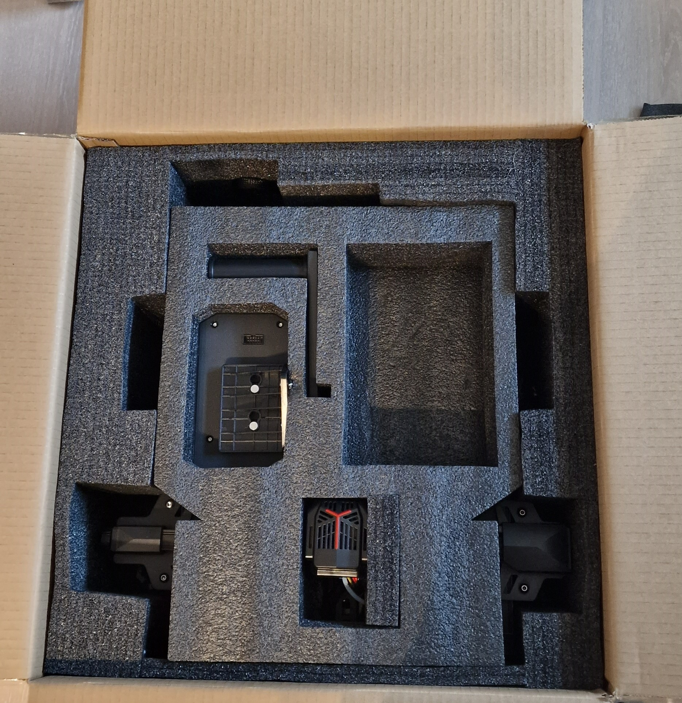
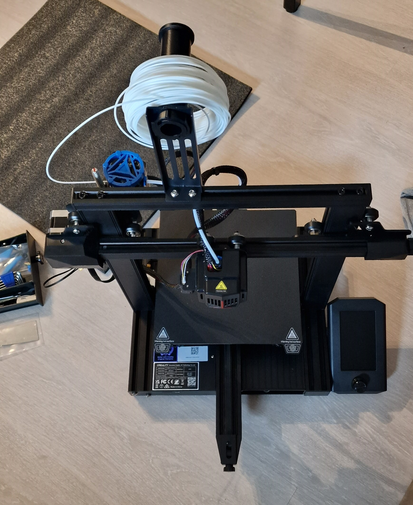

3D-Printing
I bought a 3D-Printer :)
A Creatily Ender 3 V2 Neo:
Unboxing
 
Initial Setup
The initial setup was quite easy. It was a simple task of screwing in the gantry frame to the base and attaching the screen. After that, just hook it up to power and you can start :) I followed the guide in the provided manual
here
The first thing i did was level the bed and set the Z-Axis offset. Sadly, i realized a few prints later, that the print head was not fixed, resulting in Z-Axis wobble and inconsistent Z-offset.
First Prints
On the included Micro-SD-Card were two .gcode files for test-printing. However, i wanted to print something myself. So i went to Thingiverse and searched for some calibration prints. In the end, i used
this
cube for my first print. Now to be able to print the .stl file, we first need a slicer, to convert the File into GCode, wich the printer can interpret. For the time being im using the creatily slicer. Of course there are other options like cura, simplify3D and many more.
Further Prints
The next prints i did were some of my own designs, if you want to check them out, you can do so
here
.
I also ordered black filament, wich is more suitable for my usages. For my designs i used FreeCAD. The modelling in CAD software took me the longest, since im unfamiliar with CAD software, but i managed to find my way around the software :)
CAD-Models ive done so far:
Alfa-Romeo radio cover
JVC head unit frame
Technics SL-D3 hinge
OctoPrint setup
To be able to upload files to the 3d Printer directly, i hooked up my Raspberry PI to the micro usb port on the printer. The Raspberry PI uses a Raspberry distribution called "OctoPI". with this, im able to control the printer via Web-Interface, upload .gcode to the raspberry and print directly and view gcode in real time. OctoPI is an OpenSource Project.
more information
.